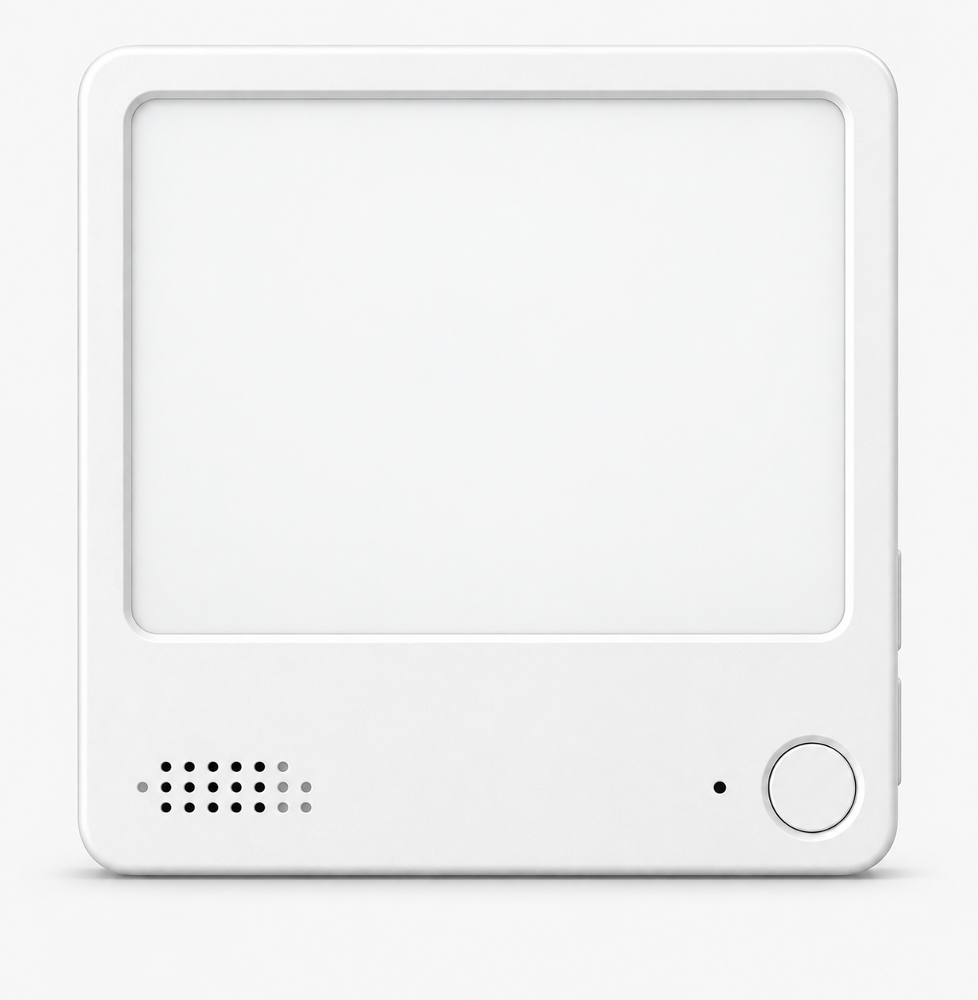
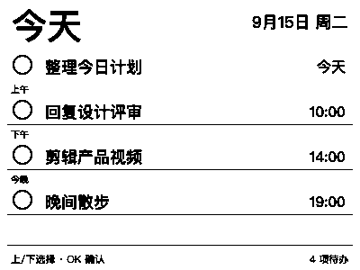
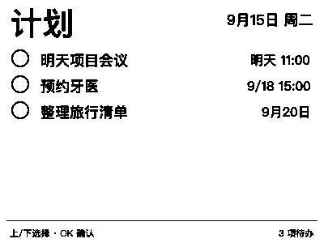
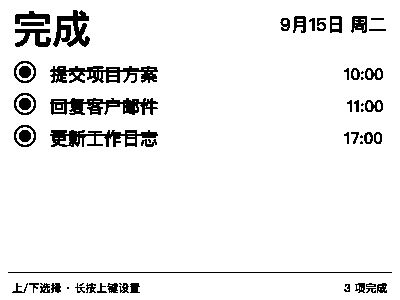
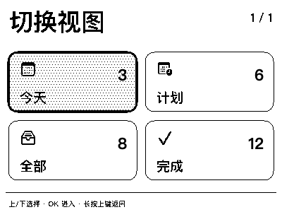

随手新增
在 iPhone 或 Mac 的原生“提醒事项”里继续使用熟悉的日期、时间和列表。
ZECTRIX NOTE4 · Apple 提醒事项
“墨水屏提醒事项”用 Mac 作为本地桥梁，将 iPhone、Mac 与 NOTE4 连接起来。手机上新增，墨水屏立即显示；墨水屏上完成，也会写回 Apple 提醒事项。
仅适用于 4.2 英寸黑白版 NOTE4，不适用于 NOTE4C。刷写会覆盖原厂固件。

完全联动 Apple 生态
NOTE4 不保存你的 Apple ID，也不直接登录 iCloud。Mac App 使用系统 EventKit 读取你授权的列表，再通过家庭局域网与墨水屏同步。
在 iPhone 或 Mac 的原生“提醒事项”里继续使用熟悉的日期、时间和列表。
Mac 检测到 EventKit 变化后立即同步，定时同步作为网络断线补偿。
上、下键选择，按 OK 完成；操作写回 Mac 后，经 iCloud 到达 iPhone。
主要功能
逻辑跟随 Apple 提醒事项。今天按上午、下午、今晚分段；计划保留未来日期；全部不设项目上限；完成视图每页显示六项。
设备立即用实心圆和删除线反馈，随后上传本地操作，约 5 秒刷新并移除已完成事项。
事项到达指定时间后显示紧凑提醒卡片，并播放提示音。上、下键选择，OK 执行。
文字在 Mac 端进行高分辨率抗锯齿后转换为 1-bit。选择移动使用局部刷新，累计后自动全刷清理残影。
NOTE4 先将操作保存到 Flash，Mac 成功写入 Apple 提醒事项并回执后，设备才清理队列。
首次启动显示 Wi-Fi 二维码。扫码后从附近网络列表选择家庭 Wi-Fi，无需手动输入网络名称。
真实渲染预览
以下图片直接由当前 Mac 渲染器生成，分辨率均为 NOTE4 原生 400 × 300。




浏览器刷机
请使用最新版 Chrome 或 Edge。iPhone、iPad 和 Safari 不支持网页 USB 串口。
使用可以传输数据的 USB 线，并关闭串口监视器或其他可能占用 NOTE4 的程序。
点击上方“连接 NOTE4 并刷入”，选择设备串口。无法识别时，按住 OK 键重新插入 USB 后再试。
确认设备是 ZECTRIX NOTE4 黑白版，不是 NOTE4C。刷机会覆盖设备原厂固件。
不要关闭页面或拔掉 USB。等待写入与校验全部完成，再让设备重新启动。
NOTE4 显示二维码后，用 iPhone 相机扫码加入热点，并访问 192.168.4.1 完成配网。
完成双向同步
Mac 与 NOTE4 连接同一个家庭网络后，在应用中填写设备 IP、授权“提醒事项”， 再选择要显示的列表。iPhone 的变化经 iCloud 到达 Mac 后会立即推送到墨水屏。
Mac 是本地桥梁，必须保持应用运行。设备不保存 Apple ID，也不会直接访问 iCloud。常见问题
网页刷机依赖 Web Serial。当前请使用电脑端 Chrome 或 Edge，iPhone 负责扫码配网。
不能。Mac App 通过 Apple 官方 EventKit 权限访问提醒事项，再在局域网内同步。
长按上键进入设置，优先选择“重连 Wi-Fi”；需要更换网络时选择“重新配网”。
确认 Mac 与 NOTE4 在同一网络，并在浏览器访问 http://设备IP/api/status 检查连接。